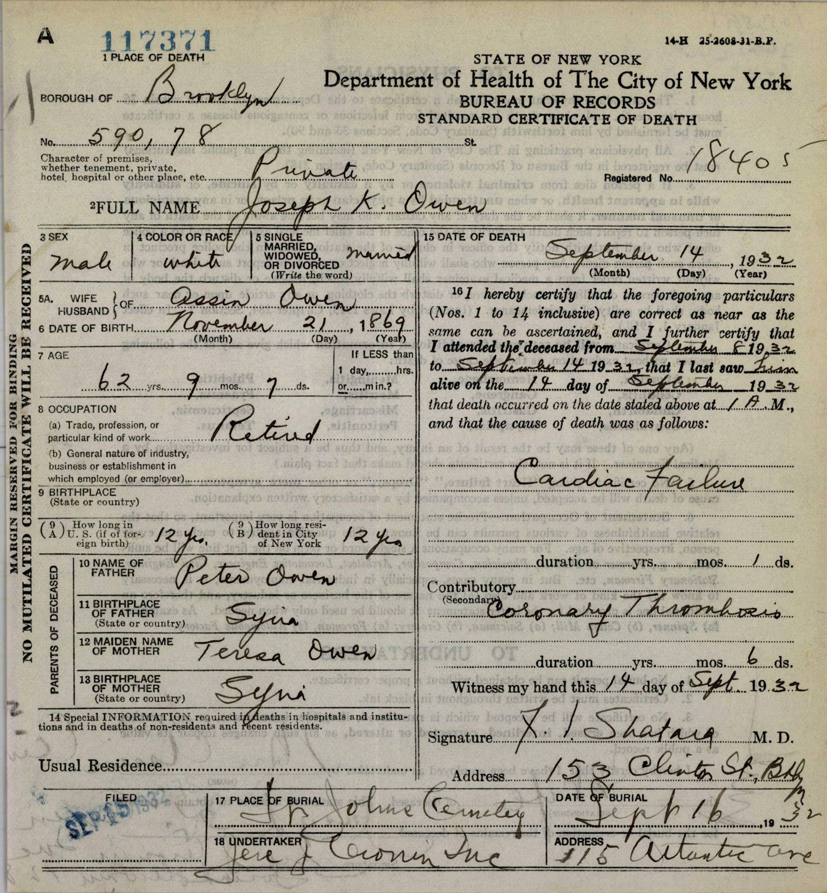
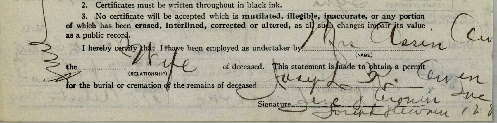
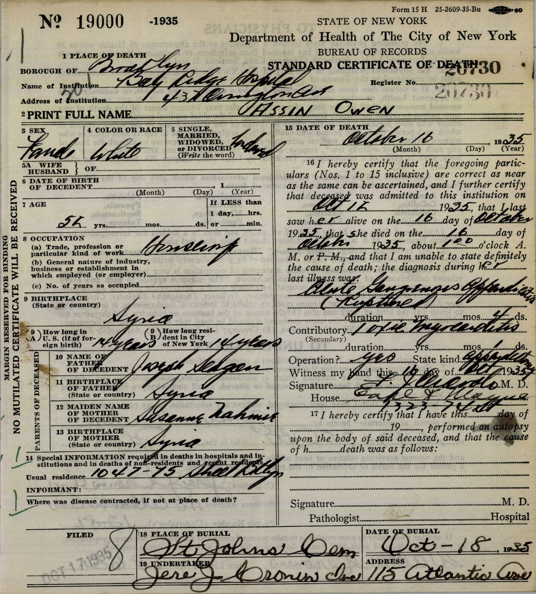
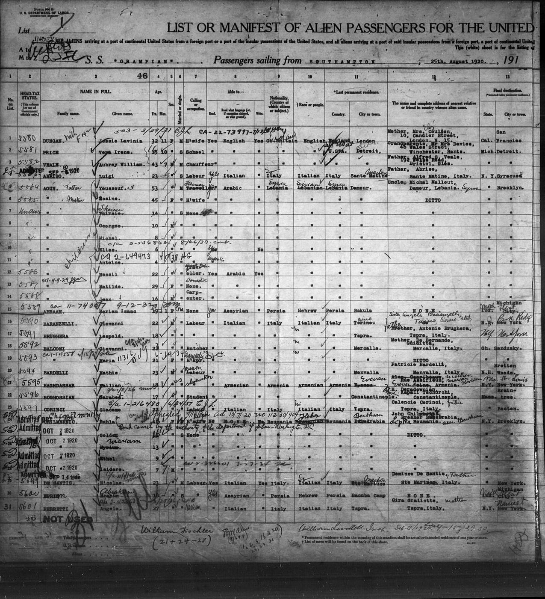

Joseph and Assin Aoun, their nine children and how the family reached Brooklyn.
Part OneThe Aoun (Awn) Family, from Damour to Brooklyn
What we foundThe family was Aoun in Damour. The family says the name became Awn in America (Family), and records also wrote it Owen and Aun; Joseph’s death certificate says Owen (Confirmed).
The Awn story begins in Damour, a coastal village south of Beirut.
Damour sits on the Mediterranean coast about eleven miles south of Beirut. When the Aouns left in the summer of 1920, the First World War had only just ended, and Mount Lebanon was recovering from a wartime famine that, by most historians' estimates, killed a large share of its people. In September 1920, as the family crossed into New York State, France was proclaiming the new state of Greater Lebanon under its mandate. This is background, not a record of this family, and the papers do not tell us why Joseph and Assin decided to go. What they do tell us is that they took all eight children with them, a party of ten on third-class tickets by way of Southampton and Quebec, with Joseph about 50 years old and Brooklyn as their destination. That is a lot to stake on a new country.
Spellings: the family name is Aoun, Awn or Owen in the records, and we treat them as one family. Joseph is Yusuf in Arabic. Assin is written Essine, Aseen, Affin and Assin.
Document 82Joseph’s death certificate, no. 18405, 14 September 1932: “Joseph K. Owen,” born 21 November 1869, son of “Peter Owen” and “Teresa Owen.” From the record.
Joseph's death certificate, 14 September 1932. The New York City certificate for "Joseph K. Owen," died at about 1 a.m. on 14 September 1932 in Brooklyn, born 21 November 1869, aged 62 years, 9 months, 7 days (this day count does not fit the printed birth date: from 21 November 1869 to 14 September 1932 is 62 years, 9 months and 24 days, while 9 months and 7 days would point to about 7 December 1869, so the records disagree and his birth date is an open question). It lists him as married to "Assin Owen," retired, 12 years in the U.S. and in New York City, son of "Peter Owen" and "Teresa Owen," both of Syria. The cause is cardiac failure (one day), with coronary thrombosis (six days) contributing, signed by the attending physician. Burial was at St. John's Cemetery on 16 September, with Jere J. Cronin, Inc., of 115 Atlantic Avenue as undertaker. The second picture is the bottom of the back of the certificate, where the undertaker's statement is signed "Mrs. Assin Owen" as the "Wife" of the deceased, the person who asked for the burial permit. The record shows the first name Joseph and the family name spelled Owen. Source: New York City Department of Health, Standard Certificate of Death, Brooklyn, registered no. 18405 (1932), as viewed on FamilySearch / New York City Municipal Deaths. Name as written: Joseph K. Owen.


Document 83Assin’s death certificate, no. 20730, 16 October 1935: “Assin Owen,” a widow, died at Bay Ridge Hospital. From the record.
Assin's death certificate, 16 October 1935. The certificate for "Assin Owen," a widow aged 52 who did housework, died about 1 a.m. on 16 October 1935 at Bay Ridge Hospital, Brooklyn; she lived at 1047 75th Street and had been in the U.S. and New York City for 14 years. Her father is written "Joseph Segen" (her son Louis's 1937 marriage certificate gives "Segan") and her mother's maiden name appears to read "Susanne Nahmir" (hard to read: the first letter could also be K or H, and the last letter r or e, so this is our best reading). Her date of birth is blank. The cause is acute gangrenous appendicitis (ruptured), after an appendectomy, with toxic myocarditis contributing. She was buried at St. John's Cemetery on 18 October. The back carries the undertaker's statement, which names "John Owen" of 1047 75th Street as her "Son," the next of kin who asked for the burial permit. The record spells the family name Owen. Source: New York City Department of Health, Standard Certificate of Death, Brooklyn, registered no. 20730 (1935), as viewed on FamilySearch / New York City Municipal Deaths. Name as written: Assin Owen.

Document 133Joseph’s death notice, Brooklyn Times Union, 15 September 1932, p.22: “Joseph K. Owen, 62,” born in Damour, with four sons and two daughters named. The paper and date come from the saved file’s name; the clipping does not print them.
Joseph's death notice, September 1932. As printed: Joseph K. Owen, 62, of 590 78th Street, died "yesterday" at home. He was born in Damour, Syria, and had lived in Brooklyn for 12 years. He leaves his wife, Affin (Assin); four sons, John, Mitchell, Louis and Anthony; and two daughters, Matilda and Theresa. The funeral was to go from the home to St. Mary's Syrian R. C. Church on Hicks Street for a requiem mass, with burial at St. John's Cemetery under J. J. Cronin.
Four things stand out. Louis is Elias, who signed his 1937 marriage certificate as Louis J. Awn. The same four sons are named in Esther Ayoub’s 1961 notice. George, who was 21 in the April 1930 census, is named in none of the three notices, and neither is Nassib (Nessil), who died in 1924; we now know why. George drowned in July 1930, from the Arabic papers of that week and Nassib died in 1924. The address, 590 78th Street, is also the address on Joseph's death certificate (item 82), while the 1930 Arabic notice for George (item 135) gives 466 78th Street. And the funeral church is St. Mary’s Syrian Roman Catholic, while the Arabic papers say Our Lady of Lebanon, so that detail is still open.
Source: Brooklyn Times Union, 15 September 1932, page 22 (taken from the file name of the saved copy; the clipping itself does not print the paper or date). Names as printed: Joseph K. Owen, Affin, John, Mitchell, Louis, Anthony, Matilda, Theresa.
Document 134Assin’s death notice, Brooklyn Times Union, 17 October 1935, p.22: “Assin Owen, 52,” with the same six children named. The paper and date come from the saved file’s name; the clipping does not print them.
Assin's death notice, October 1935. As printed: Assin Owen, 52, a native of Syria, died "yesterday" at her home, 1047 75th Street. She leaves four sons, John, Mitchell, Louis and Anthony, and two daughters, Matilda and Theresa. The funeral was to be held on Friday at 9:30 a.m. with a solemn requiem mass at Our Lady of Lebanon R. C. Church, with burial at St. John's Cemetery, directed by Jere J. Cronin. The date fits her death on 16 October 1935 and a Friday funeral on 18 October.
The list of children is the same as in Joseph's notice three years earlier (item 133); George had drowned in 1930, five years before. Joseph's funeral was at St. Mary's Syrian R. C. Church and Assin's at Our Lady of Lebanon; both notices call the church Roman Catholic.
Source: Brooklyn Times Union, 17 October 1935, page 22 (taken from the file name of the saved copy; the clipping itself does not print the paper or date). Names as printed: Assin Owen, John, Mitchell, Louis, Anthony, Matilda, Theresa.
21 Nov 1869Joseph’s birth, as his death certificate gives it
3 Sep 1920Joseph, Assin and eight children reach Quebec
28 Apr 1930A Damour brotherhood elects a treasurer named Yusuf al-Khoury Awn (probably Joseph)
14 Sep 1932Joseph dies at home in Brooklyn
16 Oct 1935Assin dies at Bay Ridge Hospital
8 Jun 1961Assin and George are moved at St. John’s, the cemetery’s search shows
What we foundThe man the city wrote down as “Joseph K. Owen” was Yusuf al-Khoury Butrus Awn to his own people. Yusuf is the Arabic form of Joseph, Butrus is Peter, and the K. most likely stands for Khoury (our translation, to be confirmed by a native reader).
“Death of a righteous man”Al-Hoda, 17 September 1932, p.3, the local-news headline over Joseph’s death (our translation, to be confirmed by a native reader)
When Joseph died in Brooklyn on 14 September 1932, the city recorded him as “Joseph K. Owen,” retired, aged 62, the son of Peter and Teresa Owen. The Arabic paper Al-Hoda printed what looks like another man: “Yusuf al-Khoury Butrus Awn,” of Damour (our translation, to be confirmed by a native reader). He is one person, and the two names fit together. The ship list of 1920 had already written him a third way, Youseuf Aoun, a farmer or traveler of 53.
His death certificate says he was born on 21 November 1869, and that he had lived in the United States for 12 years, which fits the family’s arrival in 1920. He died of cardiac failure with a coronary thrombosis and was buried at St. John’s Cemetery on 16 September. Al-Hoda said he died of a heart attack on the Wednesday morning, that the funeral Mass was at Our Lady of Lebanon on Hicks Street, and said that members of the Damour fraternity came (our translation). The Brooklyn Times Union says St. Mary’s Syrian Roman Catholic Church on Hicks Street; we take these to be one church under two names.
The same fraternity may show up two years earlier. On the evening of Monday 28 April 1930, the Damouri Fraternity Society met at Columbus Hall and chose its officers, and its treasurer is printed as “Yusuf al-Khoury Awn” (Al-Hoda, 23 May 1930; our translation). It is probably Joseph, since the name matches the one in his notices and he was a Damour man, but nothing on the page says so, and the other Awns elected with him are named without any link to him. If it was him, he was trusted with the Damour men’s money at the age of sixty.
One more page may tell us about his own family. In March 1926 the Damour magazine Ash-Shams printed a notice of the death in Brazil of “the late Jibrail,” who had emigrated about 1911, and it condoled his two brothers, “Khawaja Mikhail in Damour and Khawaja Yusuf in New York” (our translation). The notice is addressed to a Mikhail al-Khoury Boutros Awn, and Joseph’s father is Peter (Butrus) on his certificate. So Joseph may have had a brother who stayed in Damour and another who went to Brazil. This is the only record that says so, and no other record names either brother. A second Ash-Shams page, of July 1934, mentions the family of a “late Jibrail al-Khoury Awn” in Brazil, but it names none of Joseph’s family.
His wife Assin Aoun was written Essine on the ship list, Aseen in the 1925 census and Affin in one 1932 notice. Her death certificate gives her father as Joseph Segan (Segen; Sajaan in Arabic) and her mother as Susanne, with a family name that reads Nahmir in a hard-to-read hand. She died on Wednesday 16 October 1935 at Bay Ridge Hospital, a widow living at 1047 75th Street, of a ruptured appendix after an emergency appendectomy. Her son John signed for the burial permit. A Mass was said for her at Our Lady of Lebanon on Friday 18 October, the day she was buried at St. John’s, and Al-Hoda called her “the late Assin Yusuf al-Khoury Awn of Damour,” which probably puts her husband’s name after hers, the usual way in these notices. Her age is written four different ways across the records (45, 40, 50 and 52), so her birth year is unknown.
Her notice reads like a map of the neighborhood. It names her children and their families, the sons of Habib Aoun (Sajaan, Khalil, Farid, Sa’id and Shaker), a widow, Sofia Ghareeb, and the Aql family. How the Habib Aoun sons were related to Joseph or Assin we do not know. The same undertaker, Jere J. Cronin, Inc., of Atlantic Avenue, handled both Joseph’s and Assin’s funerals.
The cemetery’s own burial search says that in June 1961 St. John’s moved Assin and her son George from Section 20 to Section 3, Row C, the row where the same search places Joseph’s own burial, almost thirty years after his funeral. A volunteer’s Find a Grave listing, made in 2016, still shows Assin and George in Section 20 with three other Owens we do not know.
Still open Joseph’s birth: the certificate’s age of 62 years, 9 months and 7 days does not fit its own birth date of 21 November 1869, which gives 62 years, 9 months and 24 days. No Damour record has turned up. Joseph’s grave: the cemetery’s search puts his 1932 burial in Section 3, Row C, Graves 39 to 42, and Find a Grave says Grave 4A. Same man, same date, two grave numbers. The 1961 move: why Assin and George were moved, and whether the Section 20 listing on Find a Grave is out of date, is not known. The two sons: the Al-Hoda item of 17 September 1932 says Joseph was buried beside two sons who died young. No record in hand names them. Joseph’s brothers: Mikhail and Jibrail rest on one Ash-Shams page. Assin’s parents’ names and her age are our best readings of faint writing.
Family memory: why they left Damour, what the voyage was like, or what Joseph and Assin were like. If you know, please tell Sarah.
Questions for the family
Does anyone remember Joseph or Assin, or stories about them?
Does anyone know about two children who died young and are buried with Joseph?
Does anyone know why Assin and George were moved at St. John’s in 1961?
Does anyone know who Mikhail and Jibrail were, or who Michal Malleut, the uncle named on the 1920 ship list, was?
Who were the sons of Habib Aoun named in Assin’s notice?
Does anyone remember Esther, or a letter from Lebanon?
How we know this
Joseph’s death certificate, no. 18405: died 14 September 1932 at 590 78th Street, Brooklyn; born 21 November 1869; parents “Peter Owen” and “Teresa Owen”; cardiac failure with coronary thrombosis; buried at St. John’s on 16 September. From the record. The age does not fit the birth date.
Assin’s death certificate, no. 20730: died 16 October 1935 at Bay Ridge Hospital; widow, of 1047 75th Street; ruptured gangrenous appendicitis; father “Joseph Segen,” mother “Susanne Nahmir”; buried 18 October. From the record. The parents’ names and the age are our readings.
Joseph’s death notices, September 1932: Al-Hoda, 14, 15 and 17 September, and the Brooklyn Times Union, 15 September 1932. From the printed notices; the Arabic is our translation, to be confirmed by a native reader.
Assin’s death notices, October 1935: Al-Hoda, 16, 17 and 19 October, and the Brooklyn Times Union, 17 October 1935. From the printed notices; the Arabic is our translation, to be confirmed by a native reader.
Al-Hoda, 23 May 1930, p.2: the Damouri Fraternity Society’s officers, with “Yusuf al-Khoury Awn” as treasurer. From the page. That he is Joseph is probable. Our translation, to be confirmed by a native reader.
Ash-Shams, March 1926, printed p.95: the death in Brazil of “the late Jibrail,” with condolences to “Mikhail in Damour and Yusuf in New York.” From the page. That Yusuf is Joseph is probable, and that the others are his brothers is possible. Our translation, to be confirmed by a native reader.
Ash-Shams, 1 July 1934, printed p.89: a traveler in Brazil mentions the family of “the late Jibrail al-Khoury Awn.” From the page. It does not name Joseph, so any link is only possible. Our translation, to be confirmed by a native reader.
St. John’s Cemetery burial search: burials of George (1930), Joseph (1932) and Assin (1935), and a move on 8 June 1961. From the cemetery’s own screens, saved 13 November 2026.
What we foundThe 1920 ship list shows eight children, but the Arabic death notices of 1930 and 1935 name a ninth, Esther, who stayed in Lebanon (Confirmed; our translation, to be confirmed by a native reader).
Eight on the ship, one who stayed
Joseph and Assin had nine children. Eight crossed together in 1920, from Nassib, the oldest of the eight (Probable, going by the ages on the ship list), to Anthony, the youngest on the ship. The ninth, Esther (we do not know her age, so she may have been older than some of the eight), stayed in Lebanon, married there, and died in Beirut in 1961 (Confirmed: the 1920 manifest, the Arabic death notices of 1930 and 1935, and a 1961 Caravan notice).
Two of the brothers died young. Nassib died on 2 October 1924 of pneumonia and tuberculosis, and George drowned in a boat accident on 27 July 1930 (Confirmed: the Arabic papers, our translation, to be confirmed by a native reader, and the New York papers; no death certificate has been found). Family stories say one brother drowned and another died after surgery on his arm; the records bear out the drowning, but not the surgery (Family).
About 1897Nassib born
16 Oct 1899Mathilde born
2 Oct 1924Nassib dies
27 Jul 1930George drowns
Before 29 Jan 1961Esther dies in Beirut
The details: records, spellings and open questions
The children are listed here from oldest to youngest, with Esther last because we do not know her age:
Nassib (born about 1897), written Nessil on the 1920 manifest and Nassib K. Owen on his death certificate. The age (27), parents and address fit, so it is Probable that they are the same man, and the Arabic notices write his name Nassib, which suggests Nessil was a misreading. He was a printer. He died at 6:30 on the evening of Thursday 2 October 1924 at the family home, 37 Tompkins Place, with prayers on Sunday 5 October at 2 p.m. at Our Lady of Lebanon, and was buried at St. John’s Cemetery that day. The cause was broncho-pneumonia (seven days), with pulmonary tuberculosis (five months) contributing (Confirmed: NYC death certificate; Mira’at al-Gharb and Al-Hoda, 3 October 1924, p. 2). The notice says he was from Damour (our translation, to be confirmed by a native reader).
Mathilde (born 16 October 1899, Damour), later Matilda Gorayeb. She married Fred Gorayeb on 25 April 1926 and had no children. She died in December 1984 at age 85 in Brooklyn (Probable: Social Security Death Index, with the same birth date as her 1942 naturalization petition). Her brother's 1977 death notice also names her as a sister (Confirmed).
John (born 4 August 1903). His birth date differs between records, so it is still an open question (see the end of this section).
Theresa (born 7 August 1905), later Teresa/Theresa Koury. A Theresa A. Koury, age 88, died in March 1994 (Asbury Park Press index and her Social Security file). That fits Theresa's birth year and her married name, so it is Probable that she is Anthony's sister. Where she died is not confirmed: the newspaper index says Berkeley Township, New Jersey, but her Social Security file points to Staten Island.
George (born about 1907 to 1909). He was at home in the 1925 state census (age 18) and the 1930 census (age 21, a manager in ladies’ apparel), both in the Owen household (Probable that he is the Georges on the manifest). George drowned on Sunday 27 July 1930 in a boat accident (one account says a canoe) with a friend (Confirmed). His funeral was on Wednesday 30 July at 2 p.m. at Our Lady of Lebanon, 295 Hicks Street (Confirmed: Mira’at al-Gharb, 28 to 30 July; Al-Hoda, 29 and 30 July; As-Sayeh, 31 July 1930; our translation, to be confirmed by a native reader). Find a Grave lists a George Owen at St. John’s Cemetery, Section 20, Row S, Grave 207 (memorial 168999663; Probable that this is George, a pointer only). Two things are still open. The papers do not agree on where it happened: the New York papers point to Long Island, and one Arabic paper (Ash-Shams, September 1930) says a lake in Rhode Island, so we say only that he drowned. And his age is 24 in the notices, 21 in the census and 22 in Ash-Shams. One notice may suggest he was engaged to be married; we have not confirmed this, and it is a question for the family. He is not named in his parents’ 1932 and 1935 notices, which makes sense: he had died before either.
Mitchell (born 4 July 1909).
Elias (Louis) (born 3 May 1912). Louis is the name the 1930 census, his 1937 marriage certificate and the newspaper notices use; the Arabic notices give both names for the same man (Confirmed).
Anthony (born 6 March 1914), who married Helen Saydah.
Esther (birth year not known), who stayed in Lebanon and married there, later Mrs. Ayoub. See her story below.
Family stories (told by Jackie) say that two of Anthony’s brothers died young: one drowned, and one died of peritonitis after surgery on his arm. The records now bear out the first half. George drowned in July 1930, and Nassib died in October 1924 (Confirmed). Nassib’s certificate gives pneumonia and tuberculosis, not surgery, so the story of the arm surgery does not match either brother yet. It may be a memory that has blended with another family illness, and it is still an open question.
Questions for the family
Does anyone know Esther’s birth year, or the names of her grandchildren?
Who was the brother who, in the family story, died after surgery on his arm?
Does anyone know who “Mrs. Mary Awn” of Beirut was?
Spellings: on the ship list the family is Aoun. The children are written Thirese (Theresa), Georges (George), Michel (Mitchell), Elias, Antoine (Anthony), Nessil (Nassib), Matilde (Matilda) and Jean (John).
Document 1Anthony’s identification card, third class, S.S. Grampian, from Southampton on 25 August 1920. The name is hand-written and hard to read (Antoine or Antoun Aoun).
Anthony's immigration identification card, 1920. A third-class card from the Grampian, sailing from Southampton on 25 August 1920, with the passenger name written Antoine Aoun. Source: Immigration identification card, third class, S.S. Grampian, 1920; the original is held by the family. Name as written: Antoine Aoun.
Document 2The S.S. Grampian passenger list, Quebec, 3 September 1920: the Aoun family on lines 5 to 14, with “Uncle, Michal Malleut, Damour” as the nearest relative. From the record.
The Grampian manifest, 1920. Aoun, father Youseuf (53) and mother Essine (45), with children Thirsie, Georges, Michel, Elias and Antoine, last residence Damour. Column 12 (the nearest relative in the country they left) names an uncle, Michal Malleut, of Damour; the destination, Brooklyn, is in column 13. Lines 12 to 14 of the same group are Nessil (22), Matilde (29) and Jean (16). Source: Passenger manifest, S.S. Grampian (Southampton 25 August 1920; Quebec 3 September 1920), St. Albans, Vermont, National Archives microfilm M1464, List 1, sheet 46, lines 5 to 14, as viewed on FamilySearch. Names as written: Aoun, Youseuf, Essine, Thirsie, Georges, Michel, Elias, Antoine, Nessil, Matilde, Jean.

Document 112Nassib’s border card, 3 September 1920: age 22, travelling with “Youssouf, 53,” bound for Brooklyn “c/o Aunt.” From the record; the address is our reading.
Nassib’s Canadian border card, 3 September 1920. A border card for “Aoun, Nessil,” age 22, born Damour, Syria, travelling with “Youssouf, 53.” The head-tax number, 5586, is the same as line 12 of the ship’s passenger list. The nearest relative is “Michel Mallout” of Damour (our reading). The destination is Brooklyn, “c/o Aunt,” at an address that looks like 202 Butler St. (hard to read; our reading of the address and of the aunt’s name).
25 Aug 1920The family leaves Southampton on the Grampian
3 Sep 1920The ship lands at Quebec
5 Sep 1920Most of them cross into New York State at Rouses Point
ThenOn to Brooklyn
What we foundNassib’s own border card shows where the oldest son was headed: Brooklyn, in care of an aunt, at what looks like 202 Butler Street. The ship list names only an uncle back in Damour, so the card is the first sign of a relative on this side of the ocean (the address and the aunt’s name are our reading of faint writing).
“Uncle, Michal Malleut, Damour”The S.S. Grampian passenger list, Quebec, 3 September 1920, the nearest relative named for the whole family
On 25 August 1920 the Aoun family left Southampton on the S.S. Grampian, bound for Quebec, on third-class tickets. One of the small cards from that crossing, Anthony’s identification card, is still held by the family. It carries a doctor’s vaccination stamp, the words “U.S.A. Passenger,” and a hand-written “11” after the word “line” (our reading), which would be his line on the ship’s list.
On the list, which was made out for the landing at Quebec on 3 September, the family stands together on lines 5 to 14. Joseph is written Youseuf, a farmer of 53 who could read Arabic. Assin is Essine, 45, “H’wife.” After them come Thirese (14), Georges (10), Michel (8), Elias (6) and Antoine (4), and then the older three: Nessil (22), Matilde (29) and Jean (16), whose calling is written “Carpenter.” Everyone’s last home is Damour, the destination is Brooklyn, and the nearest relative named for the whole party is an uncle, Michal Malleut, in Damour. No one in America is named. The list does not say how they were related; that the nine are Joseph and Assin’s children comes from the family and from the later records.
From Quebec they went on by train. The naturalization papers of Anthony, Matilda, Mitchell, Theresa and John give 5 September 1920 for crossing into New York State at Rouses Point, and several name the Delaware & Hudson Railway. Elias’s papers give 7 September. Nassib’s border card then fills in a little more. It was filed on the same day as the ship list. It repeats the head-tax number from line 12, 5586, and it calls his nearest relative “Michel Mallout” of Damour, probably the same uncle spelled another way (our reading). It also says that his passage was paid by his parents (our reading).
Not everything adds up. Anthony is 4 on the list but 6 by his own birth date, 6 March 1914. A 1940 Brooklyn Eagle story says that John came with “his father, mother, two sisters and four brothers,” but the list shows two sisters and five brothers besides John. Nassib died in 1924, which may be why a later writer counted four (we do not know).
Still open The uncle: Michal Malleut is named for the whole family, and “Michel Mallout” on Nassib’s card is probably the same man. No record says who he was. The aunt: Nassib’s card says “c/o Aunt” and a name we cannot read, at an address that looks like 202 Butler Street, Brooklyn. We have not yet looked for that house in the 1920 and 1925 censuses. The ages: six of the nine children’s ages on the ship list do not match the 1925 census. Matilda is 29 on the list, 23 in the census, and born in 1899 by her own petition, so 20 on the ship. How many came: the Eagle’s count of four brothers against the list’s five. The day at Rouses Point: 5 September in five of the family’s papers, 7 September in Elias’s.
Family memory: why they left Damour, what they carried, who met them in Brooklyn. If you know, please tell Sarah.
Questions for the family
Does anyone know who Michal Malleut, the uncle, was?
Does anyone know who the aunt on Butler Street was?
Did anyone hear why the family left Damour in 1920, or what the trip was like?
Does anyone know what the family carried with them, or who met them in Brooklyn?
How we know this
Anthony’s 1920 identification card: third class, S.S. Grampian, from Southampton on 25 August 1920; vaccination stamp; a line number we read as 11. From the record. The name and the line number are our readings.
The Grampian passenger list, Quebec, 3 September 1920 (National Archives M1464, List 1, sheet 46, lines 5 to 14): names and ages as printed, destination Brooklyn, nearest relative “Uncle, Michal Malleut, Damour.” From the record.
Nassib’s Canadian border card, 3 September 1920: age 22, head-tax number 5586, nearest relative “Michel Mallout,” bound for Brooklyn “c/o Aunt.” From the record. The relative’s name, the address and the aunt’s name are our readings.
Canadian passenger-list index line for Elias, 1920: age 6, arrived 3 September 1920 at Quebec on the Grampian. An index line, which points to the record but is not the record. Its “Brooklyn” as a birthplace is most likely the destination column misread.
The naturalization papers of the family (Anthony, Matilda, Mitchell, Theresa, John and Elias): the entry at Rouses Point on 5 September 1920 (7 September in Elias’s), with the Delaware & Hudson Railway named in several. From the papers themselves.
Home on Tompkins Place
A house full of working children
By 1925 the family lived at 37 Tompkins Place in Brooklyn. The state census that year lists nine people at home, all born in Syria: Joseph, Assin and seven of their children. Nassib was missing, because he had died there the October before (Confirmed: 1925 state census).
By April 1930 Mathilde had married and moved out. John was a manager in a dry goods business, Theresa a clerk in dry goods, George a manager in ladies’ apparel and Mitchell a clerk (Confirmed: 1930 census). The family says only Anthony and Mitchell were allowed to go to school while the others worked (Family). A graduate list of 1932 names an Anthony Aoun, who may be ours (Probable).
1924Nassib dies at home
1925Nine people under one roof
1926Mathilde marries
1930Several of the children are at work
The details: records, spellings and open questions
By 1925 the family was living at 37 Tompkins Place in Brooklyn. The New York State census taker wrote the name Owen and listed Joseph, Aseen (40), Matilda (23), John (21), Theresa (20), George (18), Micheal (16), Luis (13) and Anthony (10), all born in Syria (Confirmed). Nassib (Nessil) is missing because he had died the October before.
In April 1930 the federal census shows Joseph (60), Assin (50) and five sons and a daughter still at home. Mathilde had married four years earlier and moved out. John (26) was a manager in a dry goods business, Theresa (23) a clerk in dry goods, George (21) a manager in ladies' apparel, Mitchell (20) a clerk, Elias (written Louis, 18) and Anthony (16) (Confirmed). The family was already in the clothing trade, which fits the family story that the brothers started with fabric and later ran the shop in Manhattan.
Anthony probably finished high school in 1932. The Brooklyn Eagle of 30 June 1932 lists an Anthony Aoun among the Alexander Hamilton High School graduates (Probable; the list gives no address, so it is not certain this is him). The family says that only Anthony and Mitchell were allowed to go to school while the others worked (Family).
Questions for the family
Does anyone remember Tompkins Place or the family’s first years in the clothing trade?
Becoming American
Four brothers, one path
The four brothers who settled in New York each became citizens between 1941 and 1943, and each followed the same steps: a declaration of intention, a petition, and an oath taken with two witnesses (Confirmed: their naturalization papers). Mathilde took her oath on 30 June 1942. Theresa waited until 10 May 1955.
Mitchell’s papers include a court order of 9 June 1943 that made Awn his legal name (Confirmed). Friends from Clinton Street, among them Said Owen, a shoemaker, stood as witnesses for several of the brothers.
6 Feb 1941Elias becomes a citizen
30 Jun 1942Mathilde becomes a citizen
5 Nov 1942John becomes a citizen
10 Nov 1942Anthony becomes a citizen
9 Jun 1943Mitchell’s name is changed to Awn
The details: records, spellings and open questions
The brothers each took the same path to citizenship, and the papers survive:
Elias: declaration of intention 1937; petition and oath with witnesses 1941.
Mitchell: declaration 1939; WWII draft card 1940; petition; and a name-change order in 1943.
John: declaration 1940; petition and oath with witnesses 1942.
Anthony: declaration 1939; draft card 1940; petition and oath on 10 November 1942. See Part Three.
Questions for the family
Does anyone have a citizenship certificate or a photograph from one of these ceremonies?
Does anyone remember the brothers talking about taking the oath?
The brothers' and sisters' later lives
Five lives within a few blocks
The brothers and sisters who stayed in the New York area made their homes close together, first in Bay Ridge and on Clinton Street, and later on 86th Street. Awn’s Specialty Shop at 82 Greenwich Street ties four of the brothers together: John owned it in 1940, Mitchell worked for him there, and Elias later became a partner (Probable: the draft cards and the 1940 census show a ladies’ wear business at that address, and the New York Times names the shop). Anthony worked there too: his 1966 obituary calls him an associate in the shop (Confirmed: Home Reporter and Sunset News, 15 July 1966).
Mathilde married Fred Gorayeb in 1926 and had no children. Theresa married Michael Koury in 1939 and had three children. John died in 1977, Mitchell in 1978 and Elias in 2001 (Confirmed: certificates, notices and grave records). John’s birth date is still an open question: a federal court was asked to change it in 1940.
25 Apr 1926Mathilde marries Fred Gorayeb
18 Apr 1937Elias marries Isabel
12 Jan 1939Theresa marries Michael Koury
14 Oct 1940Mitchell marries Barbara Machanskis
1977 to 2001John, Mitchell and Elias die
The details: records, spellings and open questions
John J. Awn (Jean on the manifest, and John Joseph Owen when he signed his name) was the oldest son in the household after Nassib’s death. He first filed to become a citizen in 1926, filed again in 1940 as a merchant living at 1047 75th Street, and took the oath on 5 November 1942, with Said Owen, a shoemaker, and his brother-in-law Fred Gorayeb as witnesses (Confirmed, naturalization papers).
His birth date puzzled even the courts. In December 1940 the Brooklyn Eagle reported that he asked a federal court to change it from 15 August 1905 to 15 August 1903, and that the Assistant U.S. Attorney opposed the change as an attempt to avoid the draft. Later papers use 4 August 1903, which also fits his ages in the 1925 and 1930 censuses.
In April 1940 John headed the household at 1047 Bay Ridge Parkway as the manager and owner of a retail ladies' wear business, with his brothers Mitchell and Anthony living with him (Confirmed, 1940 census, spelling used: Own). The business was Awn's Specialty Shop at 82 Greenwich Street, the address on his draft cards. He married Louise (probably Louise M. Alouf, in 1951; Probable), and they had three children. A 1953 New York Times real-estate item says a John Awn bought a house at 24 Harbor Lane. It is Probable this is the same John, though Theresa's 1955 papers use 26 Harbor Lane, so the address is not settled.
John died on 22 May 1977. The New York Times death notice calls him the beloved husband of the late Louise and father of their three children, and brother of Matilda Gorayeb, Teresa Koury, Mitchell and Elias Awn. His funeral was at McLaughlin & Sons Colonial Home on Third Avenue at 97th Street, with a Mass at Our Lady of Lebanon in Brooklyn Heights (Confirmed, NYT, 25 May 1977). He is buried at St. John Cemetery, Section 3, Row C, Grave 12 (Probable).
Mitchell Awn was born 4 July 1909 in Damour. He married Barbara Machanskis on 14 October 1940 in Yonkers (Confirmed, his 1943 naturalization petition, item 17; his draft card does not show the marriage). On 9 June 1943 a federal court changed his name from Mitchell Joseph Khoury Aoun to Mitchell Awn, the order that made Awn his legal name (Confirmed). In June 1947 a Mitchell Awn bought property recorded in Section 18, Block 6031 (Probable that this is Anthony's brother; the deed index gives no street address). A later wife, Laurdes Nassr (1923 to 2021), is Probable (marriage about 1947), and Barbara's fate is still unknown, so his two marriages are an open question. His children are Probably Paul (1953 to 2014), Rosemarie and George. Caravan notices show him as president of the St. Nicholas Young Men's Club in 1953 and of the Knights of St. Maron in 1958. He died in September 1978 on Staten Island and is buried at St. John Cemetery, Section 3, Row C, Grave 8 (Probable, Find a Grave; a pointer, not a cemetery record).
Mitchell's draft card, filled in on 16 October 1940, gives his full name as Mitchell Joseph Khoury Aoun and his address as 420 Central Park West in Manhattan. It names his employer as his brother John at 82 Greenwich Street and, like Anthony's card, gives his citizenship as "France." He signed it two days after his wedding to Barbara Machanskis, a young woman born on 15 June 1918 in Plymouth, Pennsylvania (Confirmed, his 1943 petition, item 17). Three years earlier, in April 1937, he and Theresa had been the two witnesses at Elias's wedding.
Elias (Louis) Awn was born 3 May 1912 and became a citizen on 6 February 1941. He married Isabel (born 20 August 1916) on 18 April 1937 in Brooklyn, with his brother Mitchell and sister Theresa as witnesses (Confirmed, marriage certificate; spelling used: Awn). Their children are Claudette, Louise (married at Our Lady of Lebanon in 1969), Peter, and the late Richard P. Awn (Confirmed, Elias's 2001 obituary and the 1969 wedding notice). The family was at 294 Clinton Street in the 1940 census. Elias died on 5 January 2001. The New York Times described Awn's Specialty Shop as a fixture in the Wall Street area for over 50 years, and Louise's wedding notice says her father was a partner in the shop. Isabel died 13 February 2007, and Find a Grave lists both as buried at St. John Cemetery, Section 3, Row C (Probable; a pointer only).
Elias's marriage certificate of 18 April 1937 gives his name as Louis J. Awn, age 24, a salesman living at 1047 Bay Ridge Parkway. His bride, Isabel, was 20, from 190 Warren Street, and had been born in Paterson, New Jersey. The couple were married at 295 Hicks Street in Brooklyn by a "M. Stephen," with Mitchell and Theresa as witnesses. The certificate names Isabel's parents as Fred (no surname written) and Sarah, whose maiden name is written Ganimy, but a 1958 Caravan notice calls her father Fred H. Owen of 81 86th Street, who died of a heart attack at Adelphi Hospital on 6 January 1958, about two months after his wife, Sarah. He had been living with his daughter and her husband, Mr. and Mrs. Louis Awn (Probable that these are the same man; the certificate gives no surname for Fred). When Elias filed his citizenship petition in September 1940, his witnesses were James J. Glayat (270 Clinton Street, interior decorating) and Said Owen (203 Baltic Street, written "shoe operator"). In 1942 the same Said Owen, written as a shoemaker of 294 Clinton Street, vouched for his brother John, and a Louis Glayat vouched for Anthony, so a small circle of Clinton Street friends stood up for all three brothers. Elias's own papers give his entry date as 7 September 1920, two days after the others, and the family has a story that explains it. Elias, then eight, had an eye infection, said to be pink eye, and was turned away at the border at first. He crossed two days later, once he could be admitted (Family; the two-day gap in the records fits the story, but no record mentions the eye).
Mathilde (Matilda Gorayeb) married Fred Gorayeb on 25 April 1926 and lived on Bay Ridge Parkway. They had no children (Confirmed, her petition). The Arabic paper Ash-Shams also reported it (1 May 1926), spelling his name Ghareeb (Probable that this is Gorayeb). She became a citizen on 30 June 1942, with Isabel Awn and Fred as witnesses to her good character (Confirmed, her naturalization papers).
Her 1942 petition describes a woman of 5 feet 4 inches and 165 pounds, with brown hair and eyes and a small scar on her throat. She was a housewife at 1047 Bay Ridge Parkway, which she shared with Fred and her brothers.
Fred Nahim Gorayeb was born in Damour (his draft card gives 5 November 1889, though his other papers give three other dates in 1889 and 1890). He came to New York as a boy of about 14, on the French liner La Savoie, in November 1903. By 1920 he was a merchant at 40 Washington Street, in the same Syrian trading district where Antoon Saydah had his business, and in September 1920 he became a citizen. In 1921 he was part of Gorayeb Brothers, importers and exporters at 51 Washington Street, and a letter from the firm in his passport application says he was traveling to Cuba, Panama, Ecuador and Peru to sell goods and collect money. By 1942 his draft card, with the same telephone number as John's, describes him as self-employed, 5 feet 3 inches tall and 165 pounds, with brown eyes and gray hair (Confirmed). He and Mathilde vouched for each other's good character and stood as witnesses for John's citizenship in 1942. Fred's death and burial have not been found.
Theresa Koury (born 7 August 1905) married Michael Koury on 12 January 1939. Their children are Ann, Antoinette and John (Confirmed, censuses). Theresa most likely died in March 1994 (Probable: Asbury Park Press index).
Theresa was 5 feet 1 inch and 126 pounds, with brown eyes and black hair. She did not become a citizen until 10 May 1955, thirty-five years after she arrived. Her witnesses were Helen Awn, Anthony's wife, and a Louise Awn at 26 Harbor Lane, probably John's wife (Confirmed, her petition). She was by then living at 79 86th Street, on the same street as Helen's house at 95.
Her husband, Michael Koury, was born on 27 April 1906 (Probable as we have it; the 1940 and 1950 censuses give Syria, not Lebanon, as his birthplace) and arrived in New York in August 1914, aged eight, just as the First World War began. He became a citizen in 1943. In April 1940 the census finds the couple at 294 Clinton Street, the same house as Elias and Isabel, with their baby daughter Ann, then two months old, and Sophie Koury, a widow of 62 whom the census taker wrote down as "Mother-in-law" (it is Probable that she is Michael's mother, but the record does not explain it). Michael is listed as a manufacturer in the negligee trade, working on his own account. Their children are Ann, Antoinette and John.
A sister in Lebanon, Esther Ayoub. The family remembers a sister who stayed behind in Lebanon when the others came to America. The Caravan of 2 February 1961 (page 12) reports that Mitchell Awn received a cable telling of the death in Beirut of his sister, Mrs. Esther Ayoub. A memorial Mass was held for her at Our Lady of Lebanon on 29 January 1961. The notice names her survivors:
Her son, Antoine Ayoub, "with his wife and children" (the children are not named).
Her daughters, Mrs. Sira San Remi and Mrs. Mary Awn, both of Beirut.
Her brothers in America, John, Mitchell, Louis (Elias) and Anthony Awn, and her sisters, Mrs. Matilda Gorayeb and Mrs. Theresa Koury of Brooklyn.
The notice is Confirmed, and the Arabic papers name Esther among Joseph and Assin’s children in 1930 and 1935, so she is Confirmed as Anthony’s sister. She fits the sister the family remembers (Probable). She does not appear on the 1920 ship manifest, so she stayed in Lebanon, married and had her own family there. Her birth year is not yet known. She may have been older than Matilda (born 1899). Her married name is Ayoub, and her daughter's married name is written San Remi in the newspaper, so spellings may differ in Lebanese records. "Mrs. Mary Awn" of Beirut is also interesting. She may have married a cousin or another Awn of Damour, and it is worth asking the family who she was. Her grandchildren's names are not in any record we have yet, so this is a good question.
Questions for the family
Can anyone settle John’s birth year, 1903 or 1905?
Does anyone know when and where Fred Gorayeb died?
Does anyone know how Mitchell’s two marriages ended?
Does anyone have photographs of Awn’s Specialty Shop on Greenwich Street?
Still open in this line
John's exact birth date; where George drowned, and his death record; which brother had the arm surgery the family remembers; how the sons of Habib Aoun and the Aql family were related to Joseph and Assin; why Joseph, and Assin and George, lie in different sections of St. John’s; Mitchell's two marriages; and a record of Elias's delayed entry at the border (the family says an eye infection held him back).